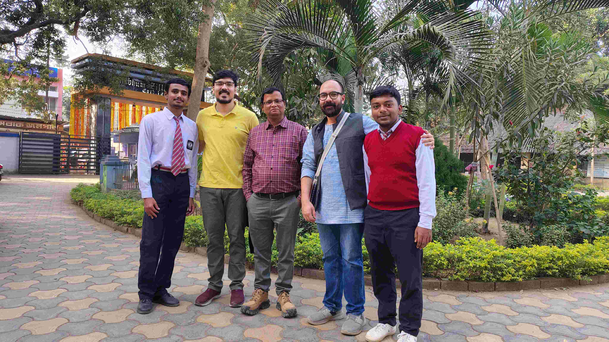
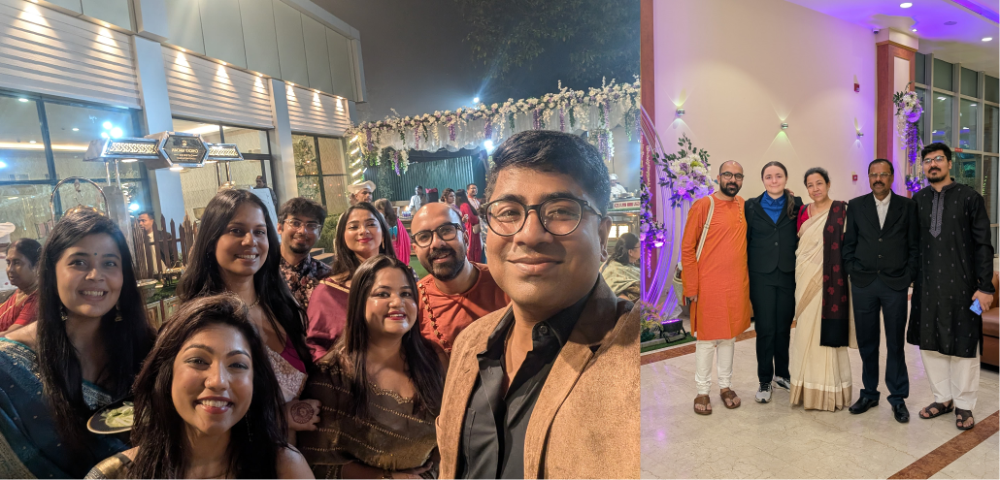

Berlin to Frankfurt
Charlotte is sleeping and I am typing down this memory into an obsidian note app. This is a good app and for the first time I got something that can typeset equation with my android tablet. Pretty good. We are reaching Hildesheim, let’s see where the journey takes us. The future is unsure and in which I am going to put my steps on. I also did the same things before in my life but still I am optimistic as always.
Frankfurt to Kolkata
The flight from Frankfurt to Dubai was really smooth. But I was a bit worried because the carrier was from Boeing 777 and from the recent incidents of South Korea and Azerbaijan airlines. But touchwood we flew well. There was a few turbulence but the overall flight was enjoyable. We watched a movie “Star Wars: rogue one” and played chinese checkers. Now we landed in Dubai and now we are on board flight to Kolkata. Very soon we will reach Kolkata when probably me and Charlotte might be sleeping on the cloudy laps.
I am looking forward to meet Maa, Abbu and Ridh and also everyone in Suri.
Kolkata
Toilet
It had been 78 years since Indian independence, but still we cannot resolve the situation with personal hygiene. We talk about how we developed personal hygiene standards on medieval times, which becomes the standard personal beauty care economy in modern world. But still the situation has worsened in India. It is so pathetic to see that we with the current government shouting about how we have become Vishwa-Guru but still we cannot provide clean toilets for the women in our modern trains and even any kind of long distance trains. Shame on us!
I felt it but never questioned it before when I was a kid. My mother, my sisters and even my father and brothers faced the same problem all throughout their life. And shame on me that it required to have a non-Indian partner to realise this issue. I was in Sealdah station where Charlotte has to go for toilet and then an employee from KFC told us that there is a toilet in first floor. I took her there and I was waiting for her to return. I was scared the whole time if she would return with a crying face. I mean I have seen the disgusting gent’s toilets in Howrah railway station. So I know what can be an obvious reaction to any kinds of public toilets in India. But fortunately she got a dried western toilet although she complained the floor was very dirty which I anticipated.
People
I have lived in West Bengal for 25 years of my life but I realised that I have no clue of my state as a whole, we can leave India out of discussion altogether. But what I am now more observant in this trip about the people here is they are like bunch of sticks tightly bound by a rope. The advantage of this kind of intertwined society is that if one individual falls, the others are so firmly holding that one does not fall completely but rather stay hung by a thread. Whereas the society in west is so individualistic that if one falls they go on descending on a free fall. But not everything is floral. The intertwined Bengali society does not at all give the people their individual free private space. And this can lead to conflicts and tension once an individual becomes adult and gets the sense of self-responsibility. So this showed me the dichotomy within me because until now I did not care or I did care but I was so far away with all the freedom that I need which never made me feel being observed or snatched away my privacy while I was vacationing in India. But this time it was different as it was with my partner. I felt it more.
Food
I always knew that food is a big thing in our Bengali culture. We talk about the last time’s food when we eat currently something. So one can see the obsession. But it is sometimes like bombardment. Once I have the breakfast, immediately I am called for lunch. After 15 mins I am again called for tiffin and again for something. This is crazy sometimes. Liking is good but obsession? I do not know. Maybe the ignorance of the reply to the question is due to me being Bengali.
Education
So one of my primary goal for this trip other than Tanay’s wedding is to visit Visvabharati University(VBU) and especially to meet Prof. Pranab Sarkar. He is the computational chemist in VBU. We went there and thought about meeting him. Unfortunately the university was closed due to Sunday. But after some time due to the help of abbu and Charlotte we saw one employee eating orange in front of the department. We got to know from him that PS sir upstairs and we visited him and it was a full 3 hours of useful discussions and nice conversations. I expressed him my interest to give a talk in the department once I am back to India next time when I am done with the defense.
But the sad part here was that even VBU being a central university the funding is so less and the less is very very less. I am astonished even with that few resources the students are publishing quality research. Kudos! We also talked to some PhD students about their feedback but they said ‘cannot complain’. This makes sense because as my friend Sujon Mandal says “you start to complain about things when you have a clear idea what things one is not getting”. The students at VBU or any other under funded universities in India do not even have an idea what their governments are not providing and what more it can provide. Like last time this time I also heard about the rising of the new private Universities like Ashoka and all. But I am really against this. The only reason is it will restrict the access the education to an average Indian student with not so good economic condition. Things won’t go in a good direction from here usually. Look at US.
Marriage

So now we are at Tanay’s wedding ceremony. We could not attend the first 2 days because Charlotte became very sick. But we attended the wedding. I attended the Haldi ceremony too. It is a lavish wedding with no lack of resources. I enjoyed it I must say. I met all my old fellows, Sayantan, Ruchira and Anushka. Sreeja was there as well. I met some new people like Udit, Shreya, Ahana, Upashana and Shirsha. Most of them are corporate class people. But they are fun people. The environment of money was all around. But this is also true that without it one could not have this much fun. This pleasure maybe binds all of us into the Darwinism trap. Anyways I am waiting very much to take the flight back to Berlin as I have so much to do once I reach there.
I stop my journal here so that I enjoy the rest of the trip without any thoughts lingering behind my head. This trip came with many surprises, revelations, changes, exhaustion, sadness and happiness. But this trip would be a very memorable chapter in my life I believe.
Tschuss!